Woodworking tips and suggestions
If you're lucky enough to have access to a truck, you'll be using it quite a bit. The hardest pieces of wood to transport are 12 foot long 2x4s and 2x6s. The truck pictured here is an 8 foot bed which is ideal as the wood doesn't protrude too far out the back, and you generally don't want too much wood resting on the tailgate.
Truck rentals from your local orange store is definitely a possibility as well. Just have some ratchet straps on hand or borrow some. When tying down, it doesn't need to be excessive but ensure that the wood is secured on both sides (lest the wood flop out on the drive home). Here, I'm using a net a few straps secured to my pickup bed, and the wood didn't budge at all.
The wood I used is as follows:
Optionally, I recommend getting two cheaper sheets of plywood (1/4" is fine) to prevent tearout during the drilling step.
The following pieces of equipment are what I would consider mandatory:
One of the four plywood sheets should be cut down to the height of your kickboard. I cut it at a bevel to better "meet" the bottom of the lowest full-size panel, but this isn't strictly necessary. If you have a chalk line, use it to ensure a straight cut. A track saw or table saw with a long outfeed would be ideal for this, but I'm going to assume most builders won't have this at their disposal.
Afterwards, all the good faces of the plywood can be painted to your taste. DO NOT SAND your plywood. Not only will the sanding not be particularly noticeable given that the plywood should be presanded on the "good side," sanding risks removing too much material from the outer ply. Painting is a lot easier before holes are drilled and the sheets are mounted, hence why I recommend doing this first.
If your plywood sheets came pretty dirty (as mine did), you can use mineral spirits (not water) to clean the surface before applying paint. If you're painting, any drywall paint will work. The paint will inevitably get scuffed as you climb anyways, and you can always apply more coats on in the future. The main benefit of painting your wall is the additional protection it affords.
I DO NOT recommend staining. Staining offers less protection (for something you'll be roughing up often), and requires a lot more time and care to apply correctly. If you just expect to brush it on and to get a rich mahogany look... well forget it. Staining itself is a skill that takes time and experience to do well, so unless you're either fairly certain about your skills, or just REALLY want that look, paint will generally give you better protection and frankly look better than a bad staining job (and be cheaper too).
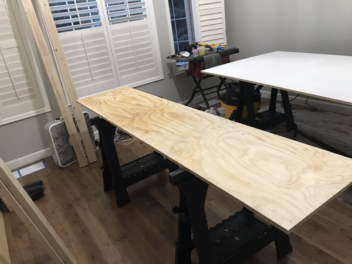Note that the vents in this room have been taped up and sealed. In actuality, the entirety of this room was sealed (as best as was possible) to keep dust from getting everywhere.
As a quick tip, with a long board and some clamps, you can make a makeshift tracksaw to dimension your kickboard as shown on the right here.
Below, I'm using an epoxy wood filler to fill in some gaps in the plywood (which I bought at a discount due to the condition they were in).
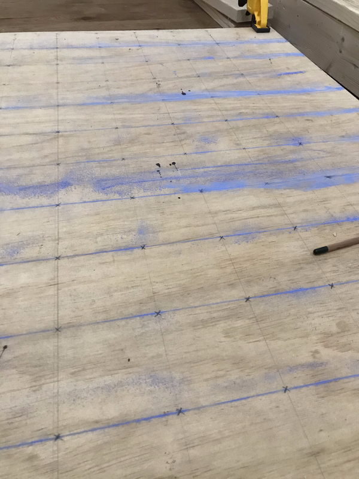Use a stop collar (ideal) or piece of tape as an indicator for when you should stop drilling (shown to the left). If you're using a cordless drill like me, expect to change the batteries a lot, so having (multiple) spare batteries is a really great idea.
If you're drilling close to the floor and using an auger bit, be careful or you'll drill straight through to flooring. Auger bits are great because they drill quickly, but sort of "sucks" the drill in as you apply pressure.
When laying out the pattern, a chalkline works great but you can get by with a straightedge and pencil. For doing the side markings, mark a separate shorter piece of wood, and then transfer measurements from their to the board (faster than finding the right tick-mark on a tape measure).
For the tension board, the T-nuts are arranged in a pattern as seen in the right, with a hole between each one for an LED. When drilling from the schematic provided, just note one corner where a T-nut should be. Then, the positions of the remaining T-nuts can be derived recursively with this simple tesselating pattern. I used four-pronged zinc coated T-nuts which I have found completely sufficient for my needs. Unless you intend on changing the holds very frequently, I don't think it's worth getting more expensive screw-in T-nuts, especially given the installation difficulty. After pounding in several hundred T-nuts, you'll see what I mean.
When drilling, I recommend placing a "sacrificial" piece of plywood on both sides of the plywood you are drilling to prevent tearout. If you don't want to do this, another good way to minimize tearout is to use a pilot hole. Note that you may need to widen the pilot hole with several passes to get good results.
DO try and drill as straight as possible. This is pretty doable without a drill guide with just a bit of practice. Straight holes make pounding T-nuts easier and reduces the risk of cross-threading a bolt later on.
When pounding the T-nuts itself, good hammer technique applies. DON'T apply pressure from your wrist. Instead, let the weight of the mallet do the bulk of the work and focus more on accuracy than power. The T-nut should be more or less flush with the surface, but it's ok if it isn't completely flush. The T-nut will be completely flush once you've screwed in a hold with a bolt later on. Also, be sure the plywood is resting on a hard surface when you do the pounding, or there won't be enough counter-pressure to allow the T-nut to sink in.
Shown to the left is the scrap wood used as a stencil to quickly mark the spacing between each column of T-nuts. Notice how an arrow is used to indicate the marking. This is a nifty carpenter's trick that removes some ambiguity about the marking when you revisit it later.
The anatomy of each of the side supports should be clearly visible on the right (absent a double front-plate that was added to the end). In hindsight, this construction would have been made simpler if I had used 2x4s and just "double upped" each cross beam for added strength. If you bought your wood a long time before assembling this portion, expect that your wood has gained a bit of a warp due to additional moisture loss after bringing the wood home from the lumber yard.
Almost every joint (connection from wood piece to wood piece) in this portion of the structure is done with pocket holes (shown below). Pocket holes are recommended over toe-nailing as they are simply more consistent. Unless you're a master carpenter or do this type of framing often, I highly recommend a pocket hole jig. Get the cheaper one from Kreg (as shown below) as it can be clamped directly to the workpiece.
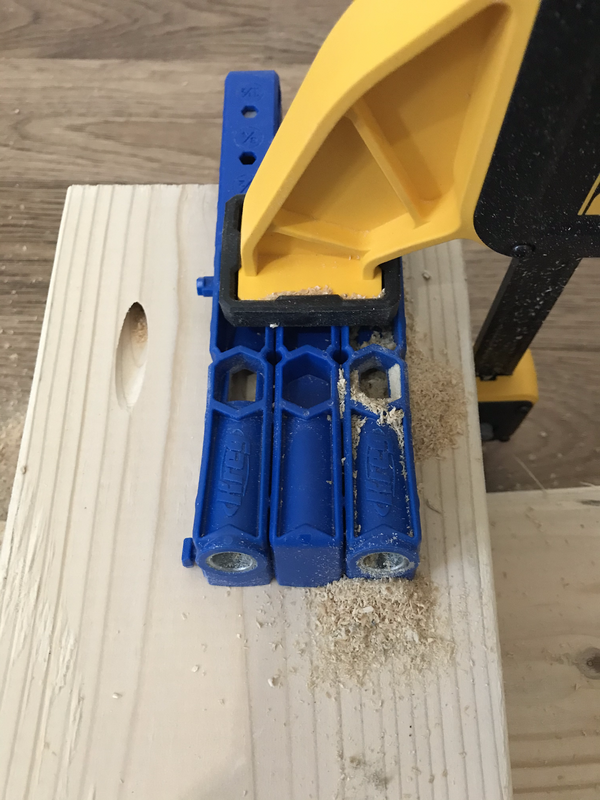The other great thing about pocket holes is that they work perfectly well when joining mitered joints. For 2x6's, I used 3 separate pocket screws at an even spacing for each joint and the joints are extremely strong.
When measuring angles to produce the desired wall steepness, remember that the grade is measured from vertical. That is, a 0-grade wall is perfectly vertical, and a 40-grade wall is measured 40 degrees from vertical. Measured from the ground, the angle would read 50. The wall I built here is a 40-degree wall, which means the joint far in the back is angled at 50 degrees from horizontal.
Studs will need to run across the back of the kickboard and each wall panel and extend slightly beyond the width of each panel on both sides (by the width of your side support). Many guides recommend vertical studs to tie in adjacent panels, but I haven't found this to be an actual issue. Instead, I use to vertical studs at the very end (as you'll see later) to address this. The advantage of horizontal studs in this design is that the studs will rest on the side supports. This gives the wall a great deal of structural stability. Furthermore, horizontal studs give us pieces that can be individually mounted to the wall later. Each plywood sheet is extremely heavy, so building it this way was a pragmatic choice in my case.
Because the studs likely have some warp, what I did was lay the studs on the board where I wanted, and marked on both sides each point where I wanted a screw to lie. I also numbered and labeled each stud as pictured below. This way, I could remove the stud and predrill pilot holes through the board. After replacing the stud with glue, I could then drill my structural screws from the opposite side, confident that the screw would go straight through the stud.
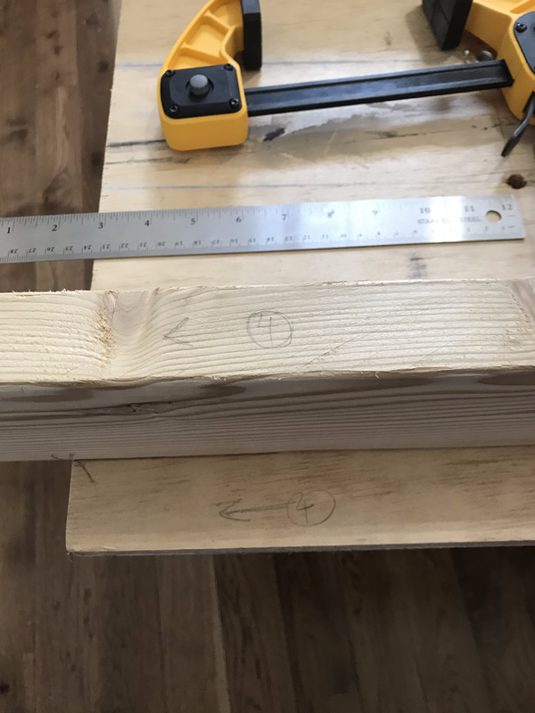The wood glue used here is NOT OPTIONAL in my opinion. The glue gives a tremendous amount of "pull out" strength. Over the entire length of the panel, it's likely the glue provides more strength than the screws.
Pictured below is another stud laying on it's side, ready to receive a screw through the pilot hole drilled at the marked position.
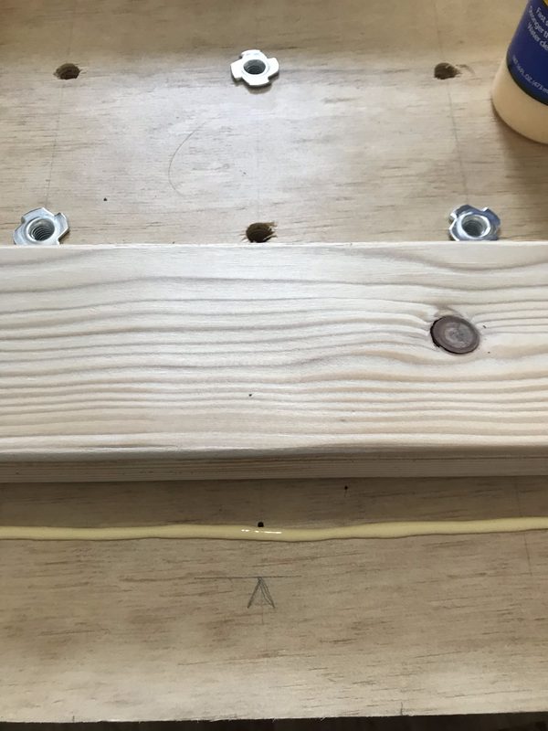Above, you can see that the kickboard and the first panel is attached. The second panel and the third panel can be mounted from the back using a trick shown below (which I'm reasonably proud of). The main idea is to fashion a couple of cleats pictured below that will rest on a stud and portrude out slightly. This gives a small but sufficient platform to rest a panel on. This way, you can slide the panel upwards and reposition the cleats higher up as you go. This is far more practical than trying to "muscle" the panels up.
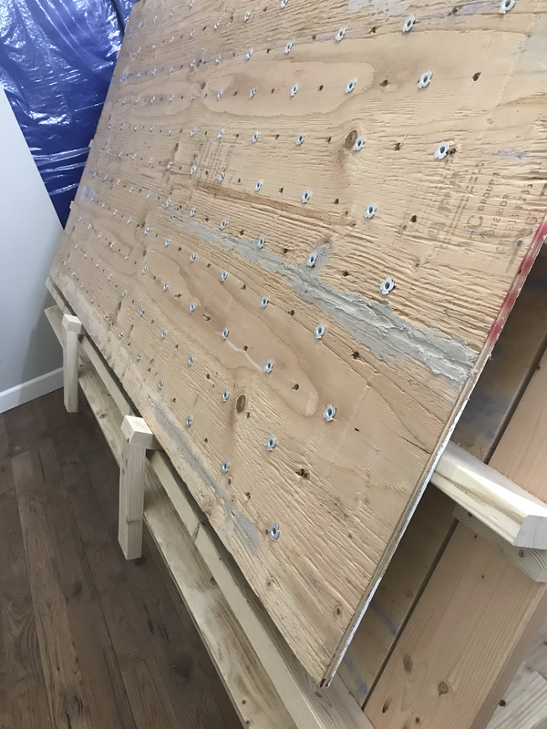The kickboard and panels can now be mounted to your side supports. The studs should essentially rest on the side supports and be tied in with structural screws. In addition, you can screw a small wood block to act as a "cleat" that each stud can rest on. A closer picture showing how this is done is displayed below. The kickboard studs are attached using pocket hole screws because there wasn't enough room to fit a drill on the opposite side. The studs for the panels are simply screwed in from the opposite side of the diagonally leaning piece at the top of each side support.
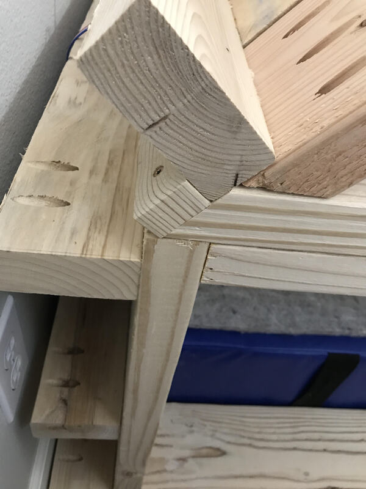With any luck, you'll have all three panels mounted as shown from the back below.
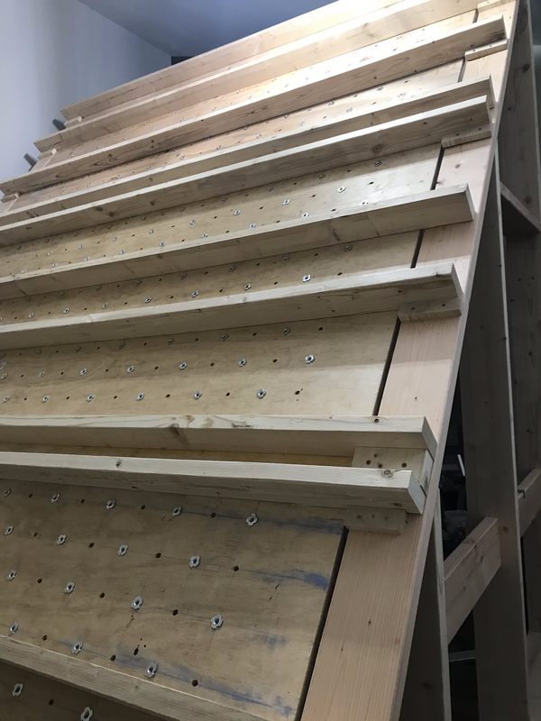Almost there! Equipped with your setter's wrenches, holds, and bolts, you should be good to go to screw in the holds themselves. Try your best to never cross-thread a bolt as this will inevitably lead to your T-nuts "spinning." While installing my holds, I needed to fix two spinning T-nuts (which I chalk up to my inexperience). The remedy for a spinning T-nut is shown below.
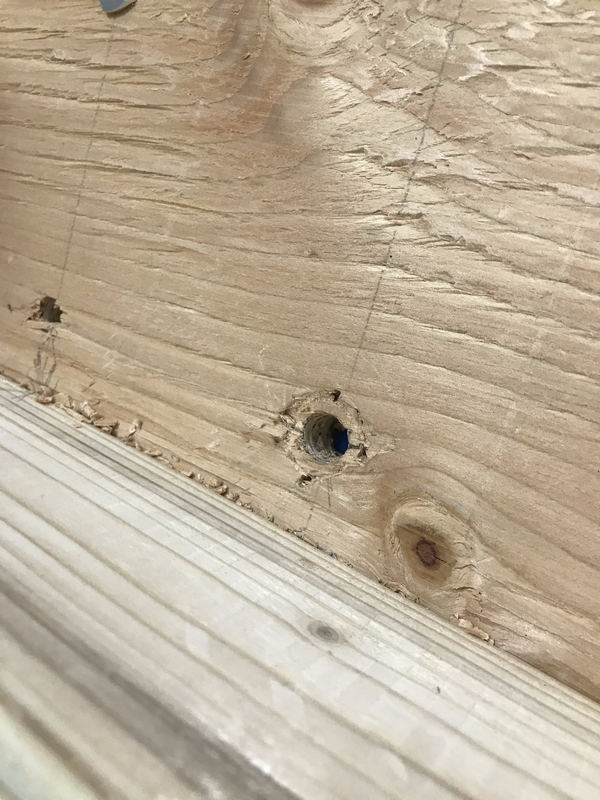 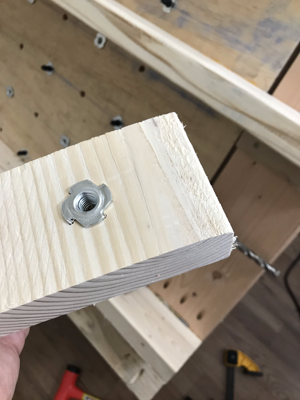Pictured to the left are a T-nut that has been popped out after spinning and a small block cut with a spare T-nut pounded in. The block was cut such that the T-nut is positioned exactly over the hole when resting on the stud it happens to fall on. If the hole was not near a stud, I would instead fasten the block (or plywood square) to the plywood itself with wood and screws. Then, when screwing in a hold in this position, a longer bolt needs to be used to reach the T-nut.
When installing the LEDs (if you are using LEDs), you may find that a 7/16" hole is too snug to comfortably get the LED in. In this case, you may want (as I did) to use a 1/2" drill bit to widen the LED holes slightly. DO test LED placements as you go. I made the mistake of testing too late and had to go back and reposition a number of them later. Below, you can see the back of the wall after the LEDs have been installed. Notice that there are some LEDs that I could not fit because the cord was too short to span two adjacent studs. This was an oversight on my part that I plan on fixing later by splicing the wires with spare 18-AWG wire I have in the house, solder, and heat shrink. To avoid this in your build, ensure that adjacent panels have studs that are spaced to allow an LED between them.
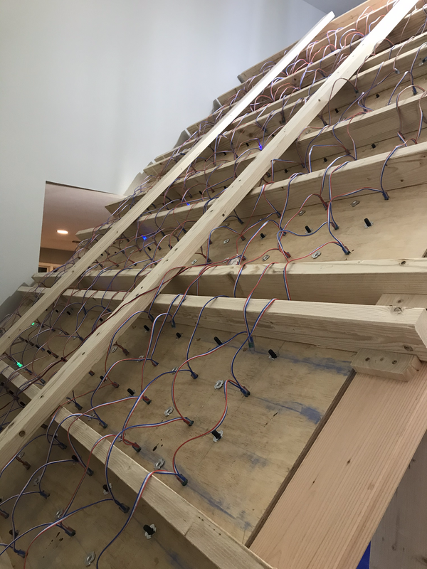Congrats! You have a climbing wall! Hopefully this guide was somewhat helpful. At this point, you should take care of details like pads/foam, installing hooks on the side for your shoes, getting a fan setup, etc. As it's your wall, you're free to do anything you like (hangboard installation, machine learning setup to analyze your climbing, etc).
I did want to write a few words about safety before parting, including some words on what I would change. First, I DO NOT recommend dynamic moves that swing you wide left and right unless you are very confident. This isn't just the side supports but also the lack of padding on both sides. If you would like to do this safely, you'll need a wider pass, and additional padding to ensure a safe landing zone. Given more space and time, I would certainly consider this to increase the range of moves I can do on the wall, but as it is today, I am satisfied that the wall is going to occupy me for a long time. The next point I wanted to make is that I'm no structural engineer, so I encourage you to do your own research into what constitutes a safe structure you can climb on. Anecdotally, I think I've "overkilled" the design and am noticing next to no wobble as I climb.
Thus far, the holds from Tension Climbing have been great and I highly recommend them. Currently, I don't have set C yet, but I imagine I will invest in them eventually in the future. Stay tuned for additional projects including a "smart" hangboard with a wifi-enabled microcontroller, and possibly my custom system for driving the Tension Board LEDs.
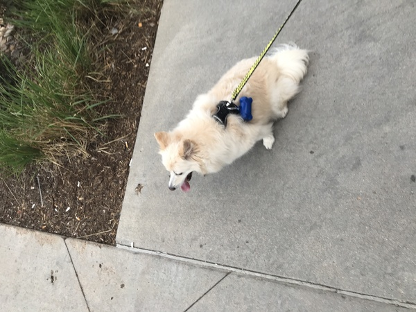 Obligatory dog picture